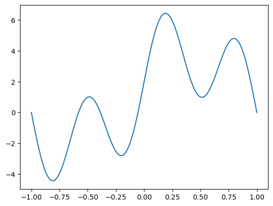
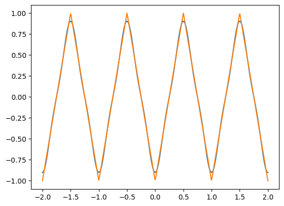

Fourier Series
Fourier Series#
import numpy as np
import matplotlib.pyplot as plt
import scipy.integrate as spi
\[
f(x) = \frac{a_0}{2} + \sum_{n=1}^{\infty} a_n \cos \left( \frac{n \pi x}{L} \right) + \sum_{n=1}^{\infty} b_n \sin \left( \frac{n \pi x}{L} \right)
\]
\[
a_0 = \frac{1}{L} \int_{-L}^L f(x) dx
\]
\[
a_n = \frac{1}{L} \int_{-L}^L f(x) \cos \left( \frac{n \pi x}{L} \right) dx
\]
\[
b_n = \frac{1}{L} \int_{-L}^L f(x) \sin \left( \frac{n \pi x}{L} \right) dx
\]
def fourier(f,L,N):
a = np.zeros(N)
b = np.zeros(N)
I,_ = spi.quad(f,-L,L)
a0 = 1/L*I
for n in range(1,N+1):
integrand = lambda x: f(x)*np.cos(n*np.pi*x/L)
I,_ = spi.quad(integrand,-L,L)
a[n-1] = 1/L*I
integrand = lambda x: f(x)*np.sin(n*np.pi*x/L)
I,_ = spi.quad(integrand,-L,L)
b[n-1] = 1/L*I
return a0,a,b
f = lambda x: 1 + 3*np.sin(np.pi*x) + np.cos(np.pi*x) + 3*np.sin(3*np.pi*x)
L = 1
N = 4
a0,a,b = fourier(f,L,N)
a0
2.0000000000000004
a
array([ 1.00000000e+00, -8.32667268e-17, 0.00000000e+00, -5.55111512e-17])
b
array([ 3.00000000e+00, 5.55111512e-17, 3.00000000e+00, -3.88578059e-16])
def fouriersum(a0,a,b,x,L):
cosine_sum = sum([a[n-1]*np.cos(n*np.pi*x/L) for n in range(1,len(a)+1)])
sine_sum = sum([b[n-1]*np.sin(n*np.pi*x/L) for n in range(1,len(b)+1)])
return a0/2 + cosine_sum + sine_sum
x = np.linspace(-L,L,100)
y = fouriersum(a0,a,b,x,L)
plt.plot(x,y)
plt.show()

import scipy.signal as sps
f = lambda x: sps.sawtooth(2*np.pi*x,width=0.5)
L = 2
a0,a,b = fourier(f,L,15)
x = np.linspace(-L,L,500)
y = fouriersum(a0,a,b,x,L)
plt.plot(x,y)
plt.plot(x,f(x))
plt.show()
